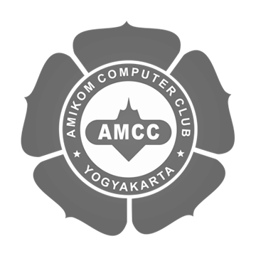

Manuel Ciricuti Chávez
INICIO
EDUCACION
CURSOS
HERRAMIENTAS
SOCIAL
CONTACTO
Perfil
Nombre
Estudio
Fecha de nacimiento
Domicilio
Estado
País
Ciricuti Chávez Manuel
Licenciado En Ingeniería De Tecnologías De La Información Y Comunicación
11 de enero de 1999
Nuevo San Juan Parangaricutiro
Michoacán
México
ITIC
Cisco Ceritified Networking Academy 1

Introduction To Computer